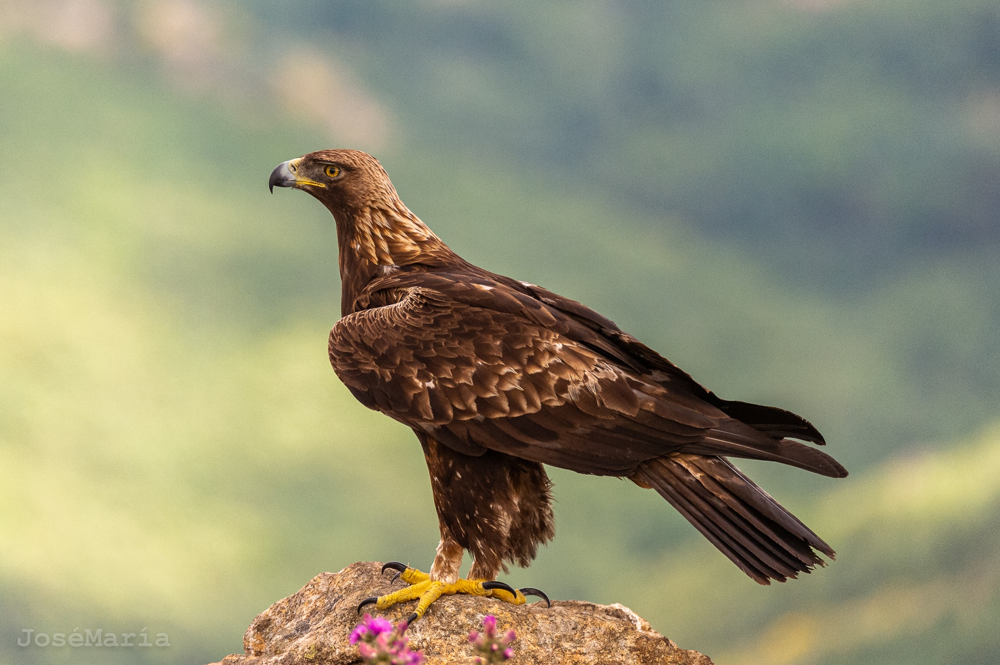
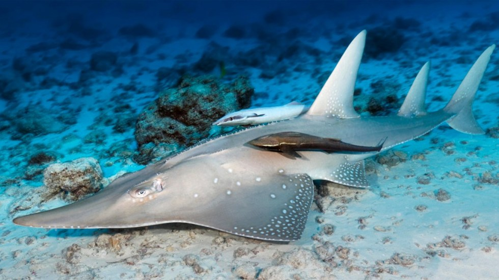
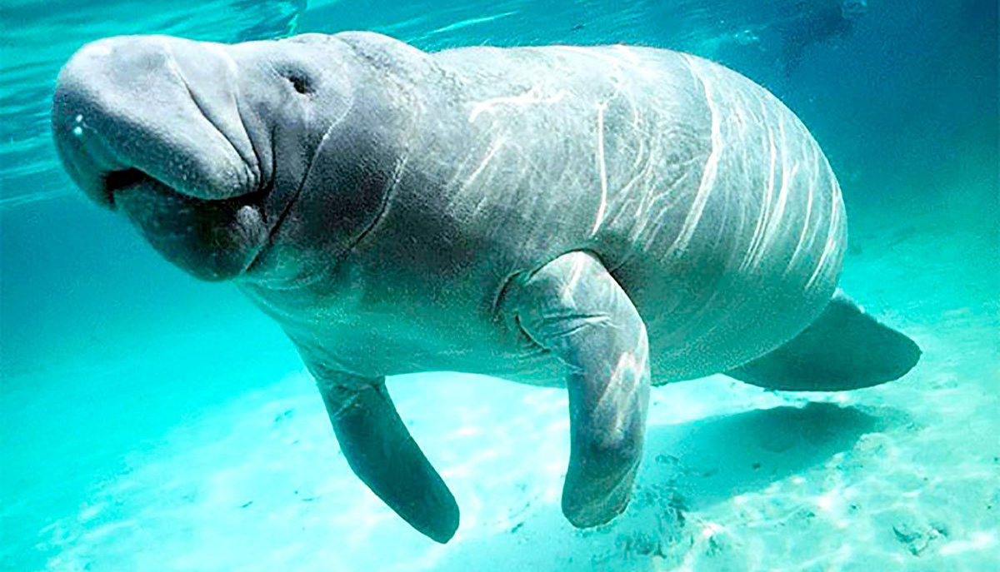
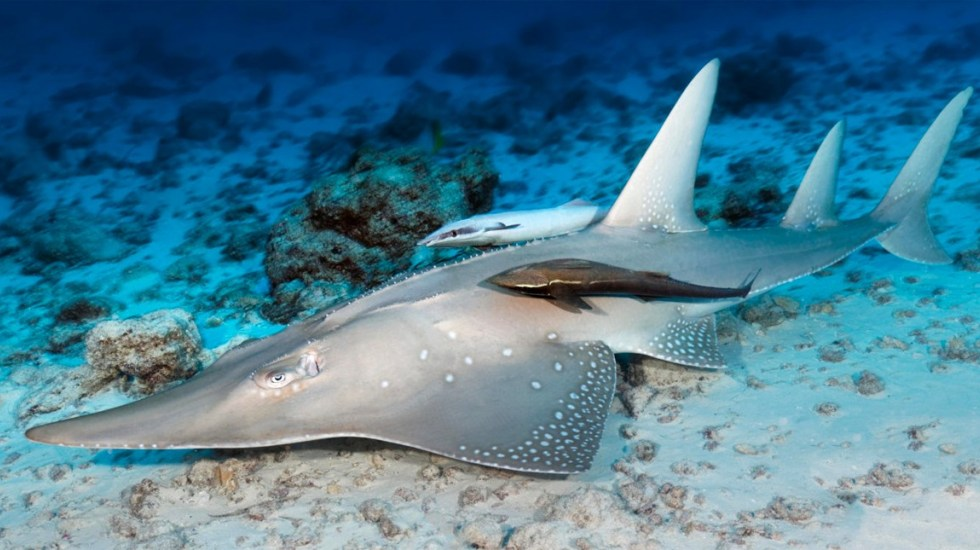
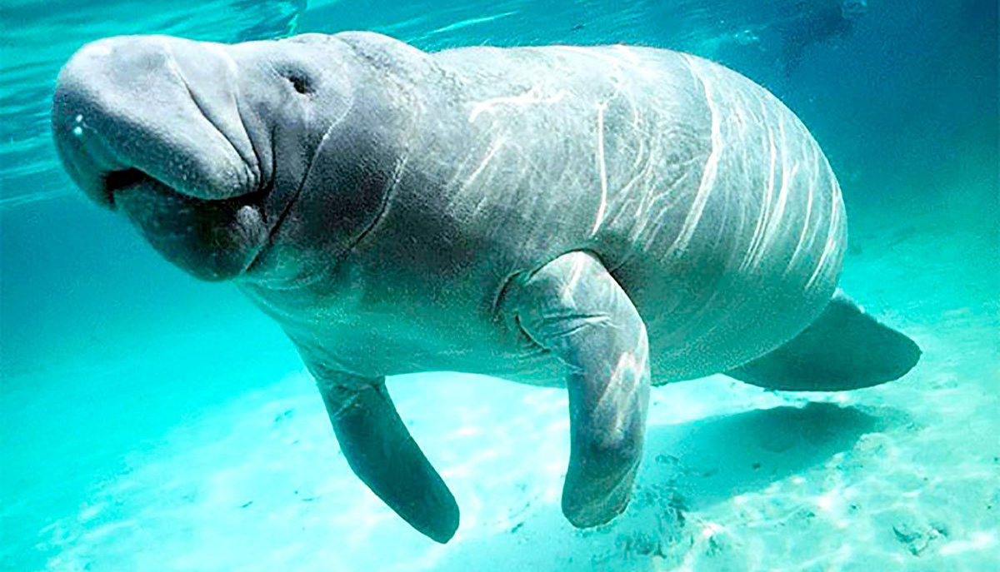
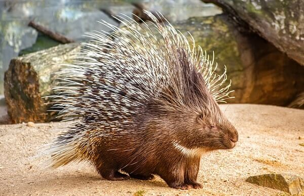
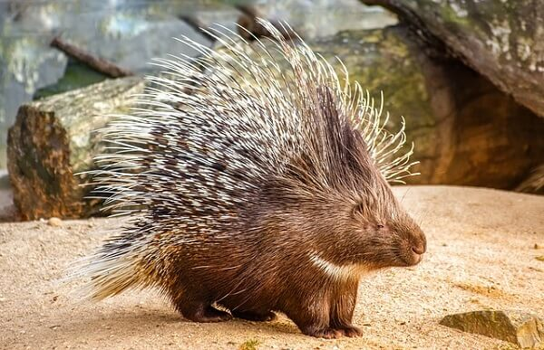

En Zacatecas existen unas 30 especies de animales en peligro de extincion entre ellos se encuentra el aguila real, halcon peregrino, tres especies de gavilanes nativos y algunos tipos de serpientes como la cascabel entre otros, al igual que el elefante de sumatra, vaquita marina, lemùr jugueton, el rinoceronte de java, elefante de sumatra, vaquita marina tlalcoyote, musaraña, cacabel chilladora, y la lagartija de collar.
 





En Tamaulipas los animales en peligro de extincion igual son muchos y algunos de ellos son El multicitado jaguar (Panthera onca), que habita en los planos costeros y en las áreas montañosas a lo largo de ambas vertientes desde el sur de Sinaloa y el centro de Tamaulipas hacia el sur y el sureste por Tehuantepec hasta la península de Yucatán Especies de Tamaulipas en peligro de extinción. “Hay una pequeña exhibición de tortugas galápago tamaulipeco (Gopherus berlandieri), está en peligro de extinción y habita en todo Tamaulipas, más en. Especies endémicas de Tamaulipas como el cotorro y la tortuga tamaulipeca están a punto de desaparecer a causa de la venta ilegal hacia los Estados Unidos


 
